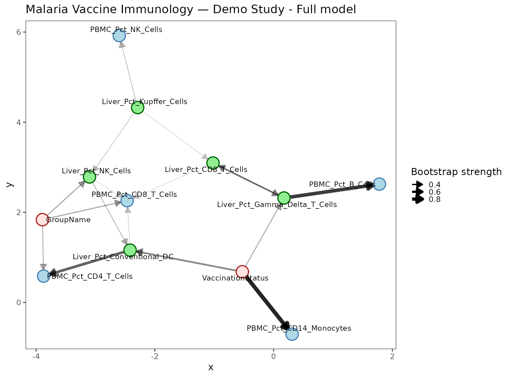
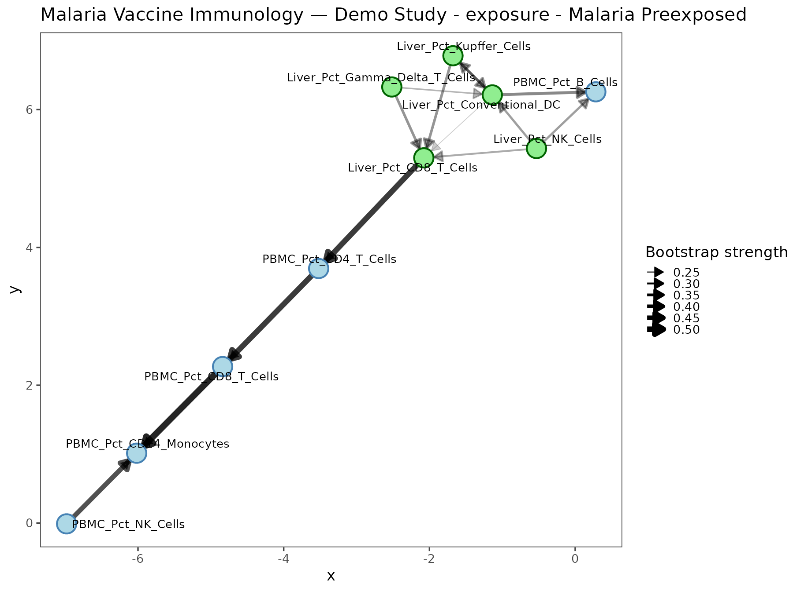
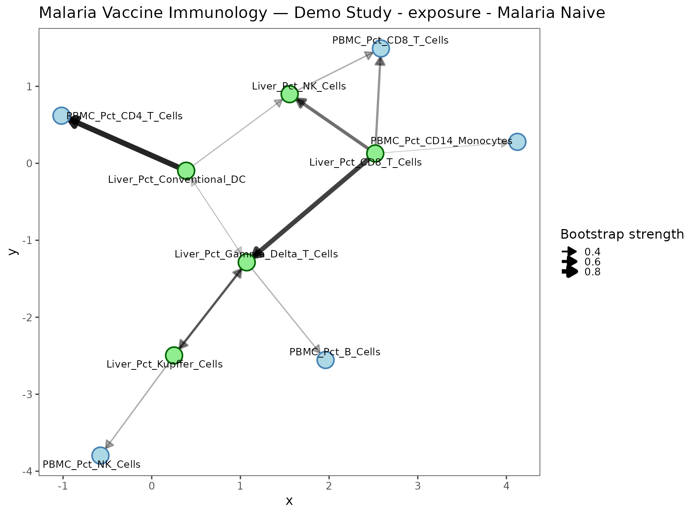
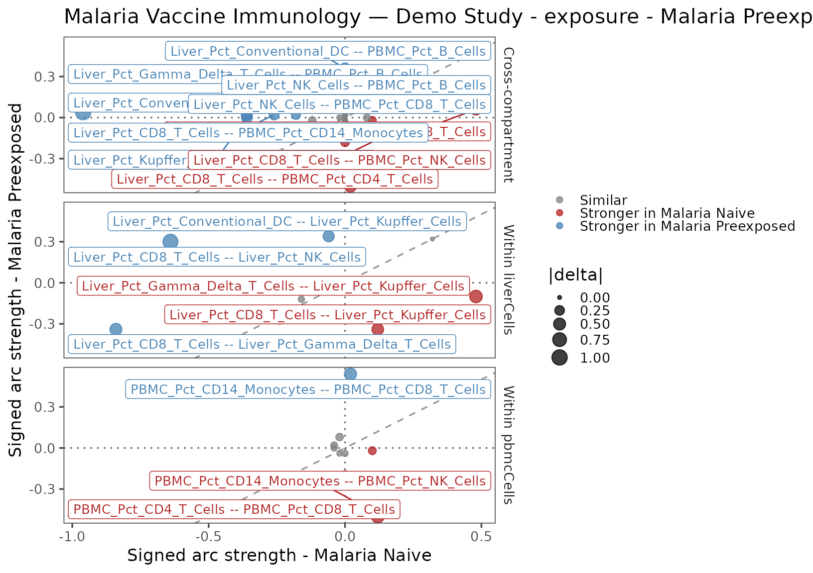
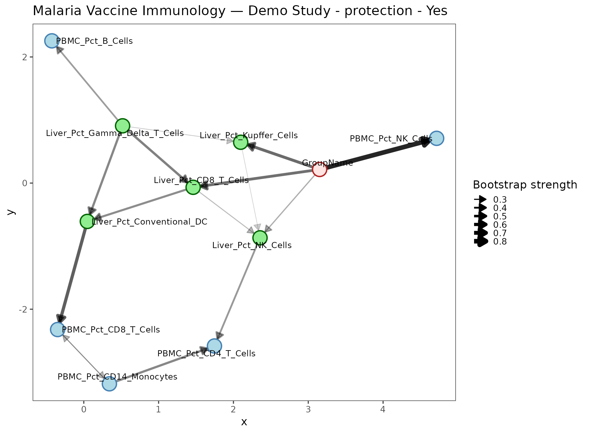
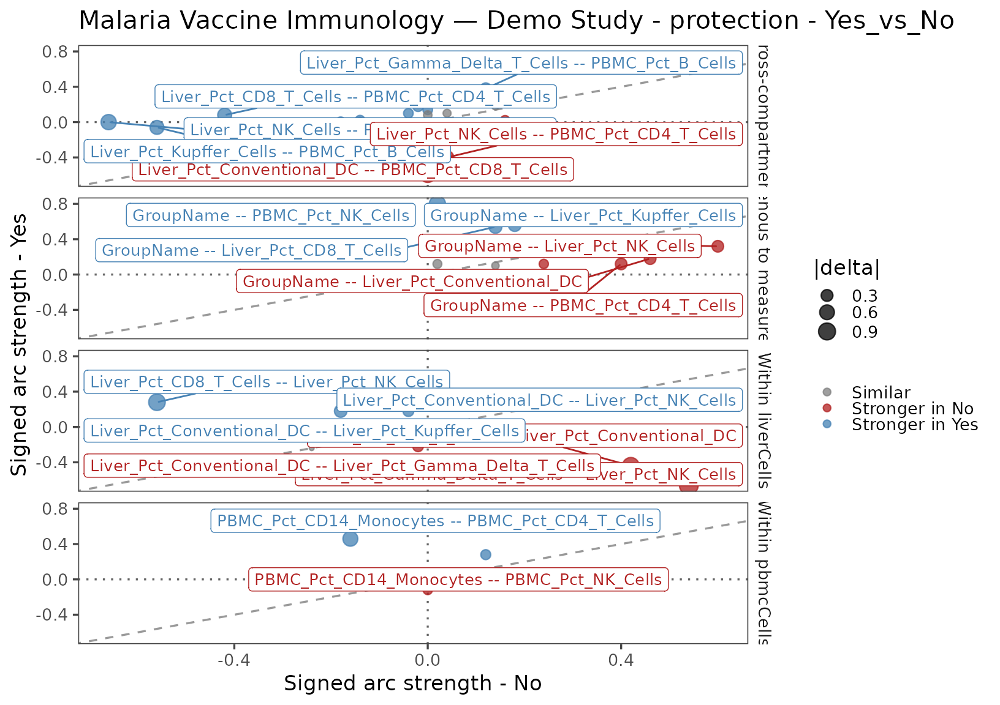

What this vignette does
This vignette walks you through every stage of the
networkR pipeline using fully synthetic
data that mimics a multi-tissue malaria vaccine immunology
study. No real data files are needed — the mock panels are generated
inline and written to a temporary directory. By the end you will
have:
- generated and inspected raw long-format flow-cytometry panels;
- configured a pipeline for two tissue compartments and two stratifications;
- traced data through imputation, discretization, and blacklist construction;
- learned and plotted Bayesian network structure on the full cohort;
- compared network structure between exposure groups (Malaria Preexposed vs. Naive) and between protection outcomes (Protected vs. Not protected).
1. Background: Bayesian Networks for immunology
1.1 What is a Bayesian Network?
A Bayesian Network (BN) is a probabilistic graphical model whose structure is a directed acyclic graph (DAG). Each node represents a variable; each directed edge encodes that is a direct probabilistic predictor of after conditioning on all other parents. The joint distribution factorises along the graph:
where is the parent set of . Missing edges denote conditional independence: . This makes BNs useful for teasing apart direct from indirect associations in high-dimensional immunological data.
1.2 Variable tiers
networkR formalises a tier system that
encodes causal precedence between variable classes. Arcs that would run
from a lower-priority tier into a higher-priority tier are
blacklisted before structure learning begins.
| Tier | Variable class | Examples | Rationale |
|---|---|---|---|
| 1 | Exogenous / design |
GroupName, VaccinationStatus,
Timepoint
|
Fixed before any biological measurement |
| 2 | Upstream tissue measurements | Liver_Pct_* |
Liver is exposed to malaria parasites first |
| 3 | Downstream tissue measurements |
PBMC_Pct_*, BM_Pct_*
|
Systemic immunity reflects hepatic priming |
Three blacklist components are constructed automatically:
- Measurement → Exogenous — no cellular proportion can cause a design variable.
- Exogenous → Exogenous — design factors are mutually independent by construction (factorial design assumption; configurable).
- Cross-tier (high tier → low tier) — e.g. PBMC cells (tier 3) cannot be parents of Liver cells (tier 2).
Compartment identity is encoded structurally through the measurement
column prefixes and measurementGroups definitions, not as a
separate row-level Tissue node. That lets the network learn
within- and cross-compartment relationships from paired subject-level
measurements while still using measurement groups for node colouring and
tier-aware blacklist construction.
1.3 Bootstrap stability and the averaged network
Because the data are finite, a single structure-learning run is
sensitive to sampling noise. networkR uses
bootstrap resampling (Friedman et al. 1999):
bootstrap datasets are drawn and a network is learned on each. The
arc stability of an edge
is the fraction of bootstrap networks that contain
or
(direction is assessed separately by the direction field of
boot.strength()).
The averaged network retains only arcs whose stability exceeds a threshold (default 0.40 for real studies; we use 0.20 here for the small demo dataset).
1.4 Signed arc strength
Raw bootstrap strength is unsigned. networkR multiplies
it by the sign of the Pearson correlation between the two nodes on
continuous (pre-discretization) data, giving a signed
strength
:
where is bootstrap arc probability and is Pearson . The delta summarises directional enrichment of an edge between two cohorts.
2. Mock data: a simulated malaria vaccine study
2.1 Study design
The simulated cohort has 24 subjects divided into
three experimental groups, each measured in two tissue compartments
(Liver and PBMC) at a single timepoint (D1). This yields
24 rows in the joined subject table after
ReadPanels() — one row per subject, with Liver and PBMC
features occupying separate column groups.
| Group | n | Vaccination status | Protection outcome |
|---|---|---|---|
| Malaria Preexposed | 8 | Vaccinated | Yes / No (4 each) |
| Malaria Naive | 8 | Vaccinated | Yes / No (4 each) |
| Control Animal | 8 | Unvaccinated | N/A |
Subjects S01–S08 are Malaria Preexposed (vaccinated); S09–S16 are Malaria Naive (vaccinated); S17–S24 are Control Animals (unvaccinated, no protection outcome).
2.2 Data-generation helpers
We simulate cell-type proportions using the Dirichlet distribution. The group-specific concentration parameters encode biological signal: Preexposed animals have relatively elevated Kupffer cells (Liver) and CD8 T cells (PBMC), while Control Animals have flatter distributions consistent with a naive systemic immune state.
# Dirichlet draw for a single observation.
# Exploits: if G_i ~ Gamma(alpha_i, 1) then G / sum(G) ~ Dirichlet(alpha).
rdirichlet_one <- function(alpha) {
raw <- vapply(alpha, function(a) stats::rgamma(1, shape = a, rate = 1), numeric(1))
raw / sum(raw)
}
# Build a long-format panel table (one row per subject × cell type).
make_panel_long <- function(cell_types, alpha_by_group,
subjects, groups, protection, seed) {
set.seed(seed)
rows <- lapply(seq_along(subjects), function(i) {
fracs <- rdirichlet_one(alpha_by_group[[groups[i]]])
data.frame(
SubjectId = subjects[i],
TimepointLabel2 = "D1",
GroupName = groups[i],
Protection = protection[i],
CellType = cell_types,
Fraction = fracs,
stringsAsFactors = FALSE
)
})
do.call(rbind, rows)
}2.3 Generating the Liver panel
Five liver cell types are simulated. The Dirichlet shapes differ by group: Preexposed animals have a higher for Kupffer Cells (resident macrophages that capture malaria parasites), while Naive and Control animals show more uniform distributions.
# Subject metadata
n_subjects <- 24
subject_ids <- sprintf("S%02d", 1:n_subjects)
group_labels <- rep(c("Malaria Preexposed", "Malaria Naive", "Control Animal"), each = 8)
protection_raw <- c(
rep(c("Yes", "No"), each = 4), # S01-S08 Preexposed: 4 protected, 4 not
rep(c("Yes", "No"), each = 4), # S09-S16 Naive: 4 protected, 4 not
rep("No", 8) # S17-S24 Controls: placeholder → overwritten to NA
)
# Liver cell types and group-specific Dirichlet alpha vectors
liver_cell_types <- c(
"Kupffer Cells", "CD8 T Cells", "NK Cells",
"Gamma Delta T Cells", "Conventional DC"
)
liver_alpha <- list(
"Malaria Preexposed" = c(5.0, 2.0, 2.0, 1.0, 0.8), # elevated Kupffer + moderate NK
"Malaria Naive" = c(2.0, 3.0, 3.0, 1.5, 0.5), # elevated CD8 / NK
"Control Animal" = c(1.0, 1.0, 2.5, 1.0, 0.5) # relatively flat; more NK
)
liver_panel <- make_panel_long(
liver_cell_types, liver_alpha, subject_ids, group_labels, protection_raw, seed = 42
)
# Add ~10 % random missing values to simulate instrument dropouts
set.seed(7)
liver_panel$Fraction[sample(nrow(liver_panel), floor(nrow(liver_panel) * 0.10))] <- NA
cat("Liver panel: ", nrow(liver_panel), "rows × ", ncol(liver_panel), "columns\n")
#> Liver panel: 120 rows × 6 columns
cat("Missing Fraction values:", sum(is.na(liver_panel$Fraction)), "\n")
#> Missing Fraction values: 12| SubjectId | TimepointLabel2 | GroupName | Protection | CellType | Fraction | |
|---|---|---|---|---|---|---|
| 2 | S01 | D1 | Malaria Preexposed | Yes | CD8 T Cells | 0.071 |
| 5 | S01 | D1 | Malaria Preexposed | Yes | Conventional DC | 0.178 |
| 4 | S01 | D1 | Malaria Preexposed | Yes | Gamma Delta T Cells | 0.002 |
| 1 | S01 | D1 | Malaria Preexposed | Yes | Kupffer Cells | 0.625 |
| 3 | S01 | D1 | Malaria Preexposed | Yes | NK Cells | 0.124 |
| 7 | S02 | D1 | Malaria Preexposed | Yes | CD8 T Cells | 0.034 |
| 10 | S02 | D1 | Malaria Preexposed | Yes | Conventional DC | 0.000 |
| 9 | S02 | D1 | Malaria Preexposed | Yes | Gamma Delta T Cells | 0.294 |
| 6 | S02 | D1 | Malaria Preexposed | Yes | Kupffer Cells | 0.369 |
| 8 | S02 | D1 | Malaria Preexposed | Yes | NK Cells | NA |
2.4 Generating the PBMC panel
pbmc_cell_types <- c(
"CD14 Monocytes", "CD4 T Cells", "CD8 T Cells", "NK Cells", "B Cells"
)
pbmc_alpha <- list(
"Malaria Preexposed" = c(2.0, 2.0, 4.5, 2.0, 0.5), # strong CD8 enrichment
"Malaria Naive" = c(3.5, 3.0, 2.0, 2.0, 0.5), # monocyte / CD4 skew
"Control Animal" = c(4.5, 2.0, 1.0, 1.0, 0.5) # monocyte dominated
)
pbmc_panel <- make_panel_long(
pbmc_cell_types, pbmc_alpha, subject_ids, group_labels, protection_raw, seed = 99
)
set.seed(8)
pbmc_panel$Fraction[sample(nrow(pbmc_panel), floor(nrow(pbmc_panel) * 0.10))] <- NA
cat("PBMC panel:", nrow(pbmc_panel), "rows × ", ncol(pbmc_panel), "columns\n")
#> PBMC panel: 120 rows × 6 columns
cat("Missing Fraction values:", sum(is.na(pbmc_panel$Fraction)), "\n")
#> Missing Fraction values: 122.5 Writing panels to disk
ReadPanels() discovers files by globbing
dataPath for filenames matching filePattern.
The tissue compartment is parsed from the filename: any file containing
"liver" (case-insensitive) maps to the canonical label
"Liver".
panel_dir <- file.path(tempdir(), "networkR_vignette_panels")
dir.create(panel_dir, recursive = TRUE, showWarnings = FALSE)
utils::write.csv(liver_panel, file.path(panel_dir, "liver_panel.csv"), row.names = FALSE)
utils::write.csv(pbmc_panel, file.path(panel_dir, "pbmc_panel.csv"), row.names = FALSE)
cat("Panel files written to:", panel_dir, "\n")
#> Panel files written to: /tmp/RtmpmNqYjw/networkR_vignette_panels
list.files(panel_dir)
#> [1] "liver_panel.csv" "pbmc_panel.csv"3. Configuration
3.1 Configuration concepts
networkR is configured entirely through a named R list
produced by BuildConfiguration() (or equivalently
ParseConfiguration() for a YAML file). The configuration
controls every stage of the pipeline:
| Section | Key parameters |
|---|---|
study |
studyName, randomSeed
|
data |
dataPath, filePattern, column name
mappings, tissue map |
variables |
exogenousVariables, stratifierVariables,
derivedVariables, measurementGroups
|
imputation |
method (pmm), numberOfImputations,
maximumIterations
|
discretization |
method (hartemink), initialBreaks,
finalBreaks, fallbackBreaks
|
structureLearning |
algorithms, bootstrapReplicates,
averageNetworkThreshold
|
stratifications |
List of cohort stratification definitions |
plotting |
Layout, colours, sizes |
output |
Save paths and file format |
3.2 Building the vignette configuration
We override only the parameters that differ from the package
defaults. Key demo choices: 50 bootstrap replicates and
averageNetworkThreshold = 0.2 to ensure a
non-trivial averaged network from a small dataset. A real study should
use
replicates and averageNetworkThreshold = 0.4.
configuration <- BuildConfiguration(list(
study = list(
studyName = "Malaria Vaccine Immunology — Demo Study",
randomSeed = 42
),
data = list(
dataPath = panel_dir,
filePattern = "[.](csv)$"
),
variables = list(
measurementGroups = list(
list(
groupName = "liverCells",
columnPrefixes = list("Liver_"),
tier = 2,
fillColour = "lightgreen",
borderColour = "darkgreen"
),
list(
groupName = "pbmcCells",
columnPrefixes = list("PBMC_"),
tier = 3,
fillColour = "lightblue",
borderColour = "steelblue"
)
)
),
imputation = list(
numberOfImputations = 3,
maximumIterations = 5
),
structureLearning = list(
algorithms = list("tabu"),
selectedBootstrapAlgorithm = "tabu",
bootstrapReplicates = 50,
averageNetworkThreshold = 0.2
),
stratifications = list(
list(
analysisName = "exposure",
variableName = "GroupName",
levels = list("Malaria Preexposed", "Malaria Naive"),
filters = list()
),
list(
analysisName = "protection",
variableName = "Protection",
levels = list("Yes", "No"),
filters = list(
list(column = "VaccinationStatus", operator = "equals", value = "Vaccinated"),
list(column = "Protection", operator = "notMissing")
)
)
),
output = list(savePlots = FALSE)
))
print(configuration)
#> networkR configuration
#> Study name: Malaria Vaccine Immunology — Demo Study
#> Data path: /tmp/RtmpmNqYjw/networkR_vignette_panels
#> Exogenous variables: GroupName, VaccinationStatus, Timepoint
#> Measurement groups: liverCells, pbmcCellsA YAML file equivalent to the above is available at
system.file("configuration_template.yml", package = "networkR").
4. Running the full pipeline
RunPipeline() is the one-call entry point. It executes
the complete chain — ingestion, derived-variable annotation, imputation,
discretization, full-model structure learning, stratified sub-models,
and pairwise structure comparisons — and returns a single
networkRPipelineResult object containing every intermediate
result and plot.
set.seed(42)
pipeline_result <- RunPipeline(configuration)
print(pipeline_result)
#> networkR pipeline result
#> Study name: Malaria Vaccine Immunology — Demo Study
#> Rows: 24
#> Measurement columns: 10
#> Stratified analyses: 2The remainder of this vignette unpacks each component of
pipeline_result in detail.
5. Panel ingestion
5.1 How ReadPanels() works
ReadPanels() discovers all files in
configuration$data$dataPath whose names match
configuration$data$filePattern. For each file it:
- Reads the raw long-format table (xlsx or csv).
- Parses the tissue compartment from the filename using
configuration$data$tissueMap. - Renames
TimepointLabel2 → Timepoint(or whatever yourrawTimepointColumn/analysisTimepointColumnmapping specifies). - Normalises
CellTypestrings to valid column names and prefixes them with{Tissue}_{cellTypePrefix}(e.g."Kupffer Cells"→"Liver_Pct_Kupffer_Cells"). - Pivots from long to wide, producing one subject × timepoint row per tissue panel.
The individual pivoted tables are then
full_join-ed on the shared key columns
(SubjectId, Timepoint,
Protection, GroupName). Because tissue
identity already lives in the measurement column prefixes, the join
produces one row per subject with both
Liver_ and PBMC_ columns aligned side by side.
Missing values after the join therefore reflect genuine assay dropouts
rather than a structural cross-tissue design artifact.
# The individual functions — equivalent to what RunPipeline calls internally:
subject_table <- ReadPanels(configuration)
subject_table <- AddDerivedVariables(subject_table, configuration)5.2 The joined subject table
st <- pipeline_result$subjectTable
cat("Subject table dimensions:", nrow(st), "rows ×", ncol(st), "columns\n\n")
#> Subject table dimensions: 24 rows × 15 columns
# Column inventory
meas_cols <- grep("^(Liver|PBMC)_", colnames(st), value = TRUE)
cat("Measurement columns (", length(meas_cols), "):\n", sep = "")
#> Measurement columns (10):
cat(paste(meas_cols, collapse = ", "), "\n\n")
#> Liver_Pct_CD8_T_Cells, Liver_Pct_Conventional_DC, Liver_Pct_Gamma_Delta_T_Cells, Liver_Pct_Kupffer_Cells, Liver_Pct_NK_Cells, PBMC_Pct_B_Cells, PBMC_Pct_CD14_Monocytes, PBMC_Pct_CD4_T_Cells, PBMC_Pct_CD8_T_Cells, PBMC_Pct_NK_Cells
# Measurement missingness pattern
na_counts <- colSums(is.na(st[, meas_cols]))
cat("NA counts per measurement column:\n")
#> NA counts per measurement column:
print(na_counts)
#> Liver_Pct_CD8_T_Cells Liver_Pct_Conventional_DC
#> 0 0
#> Liver_Pct_Gamma_Delta_T_Cells Liver_Pct_Kupffer_Cells
#> 0 0
#> Liver_Pct_NK_Cells PBMC_Pct_B_Cells
#> 0 0
#> PBMC_Pct_CD14_Monocytes PBMC_Pct_CD4_T_Cells
#> 0 0
#> PBMC_Pct_CD8_T_Cells PBMC_Pct_NK_Cells
#> 0 0| SubjectId | GroupName | Protection | VaccinationStatus | Timepoint |
|---|---|---|---|---|
| S01 | Malaria Preexposed | Yes | Vaccinated | D1 |
| S02 | Malaria Preexposed | Yes | Vaccinated | D1 |
| S03 | Malaria Preexposed | Yes | Vaccinated | D1 |
| S04 | Malaria Preexposed | Yes | Vaccinated | D1 |
| S05 | Malaria Preexposed | No | Vaccinated | D1 |
| S06 | Malaria Preexposed | No | Vaccinated | D1 |
| S07 | Malaria Preexposed | No | Vaccinated | D1 |
| S08 | Malaria Preexposed | No | Vaccinated | D1 |
| S09 | Malaria Naive | Yes | Vaccinated | D1 |
| S10 | Malaria Naive | Yes | Vaccinated | D1 |
| S11 | Malaria Naive | Yes | Vaccinated | D1 |
| S12 | Malaria Naive | Yes | Vaccinated | D1 |
Each row now represents one subject-timepoint observation with both
tissue compartments present as separate feature blocks. In this
synthetic example, any remaining NA values in the
measurement columns arise from the simulated assay dropouts we injected
into the raw panels.
5.3 Derived variables
AddDerivedVariables() applies two rules defined in
configuration$variables$derivedVariables:
-
VaccinationStatus(ifEquals): set to"Unvaccinated"whenGroupName == "Control Animal", otherwise"Vaccinated". -
Protection(replaceTargetWhenEquals): overwriteProtectionwithNAwhenGroupName == "Control Animal". The raw CSV value for controls is irrelevant.
cat("VaccinationStatus distribution:\n")
#> VaccinationStatus distribution:
print(table(st$VaccinationStatus, useNA = "ifany"))
#>
#> Unvaccinated Vaccinated
#> 8 16
cat("\nProtection distribution:\n")
#>
#> Protection distribution:
print(table(st$Protection, useNA = "ifany"))
#>
#> No Yes <NA>
#> 8 8 86. Missing-data imputation
6.1 MICE and predictive mean matching
All missing values in the measurement columns are imputed before
structure learning. networkR uses Multiple
Imputation by Chained Equations (MICE) with predictive
mean matching (method = "pmm" by default). PMM
preserves the empirical marginal distribution of each variable: the
imputed value is always a real observed value from a donor matched on
predicted values.
Because the joined analysis table is now
subject-level, all compartments for a given subject sit
in the same row. MICE therefore uses real paired cross-compartment
measurements as predictors when filling assay dropouts, rather than
reconstructing an entire missing tissue block from a row-level
Tissue indicator.
If MICE fails (e.g. too few rows relative to predictors in a small
sub-cohort), ImputeMeasurements() automatically falls back
to column-wise median imputation and emits a
warning.
# Equivalent single-step call:
imputation_result <- ImputeMeasurements(pipeline_result$subjectTable, configuration)6.2 Imputation result
ir <- pipeline_result$imputationResult
cat("Measurement columns imputed (", length(ir$measurementColumns), "):\n", sep = "")
#> Measurement columns imputed (10):
cat(paste(ir$measurementColumns, collapse = "\n"), "\n\n")
#> Liver_Pct_CD8_T_Cells
#> Liver_Pct_Conventional_DC
#> Liver_Pct_Gamma_Delta_T_Cells
#> Liver_Pct_Kupffer_Cells
#> Liver_Pct_NK_Cells
#> PBMC_Pct_B_Cells
#> PBMC_Pct_CD14_Monocytes
#> PBMC_Pct_CD4_T_Cells
#> PBMC_Pct_CD8_T_Cells
#> PBMC_Pct_NK_Cells
# NA counts before vs. after
n_na_before <- sum(is.na(pipeline_result$subjectTable[, ir$measurementColumns]))
n_na_after <- sum(is.na(ir$continuousAnalysisData[, ir$measurementColumns]))
cat("NAs before imputation:", n_na_before, "\n")
#> NAs before imputation: 0
cat("NAs after imputation:", n_na_after, "\n\n")
#> NAs after imputation: 0
cat("Active exogenous variables:", paste(ir$exogenousVariables, collapse = ", "), "\n")
#> Active exogenous variables: GroupName, VaccinationStatus, Timepoint
cat("Stratifier variables (not imputed):", paste(ir$stratifierVariables, collapse = ", "), "\n")
#> Stratifier variables (not imputed): ProtectionThe continuousAnalysisData slot holds the imputed
continuous values (used later for computing signed arc strengths via
Pearson correlations). The imputedData slot holds the same
values plus the subject-level metadata columns.
7. Discretization
7.1 Hartemink’s algorithm
Bayesian network score functions for categorical variables require
discrete (factor) inputs. networkR uses Hartemink’s
pairwise mutual-information algorithm
(bnlearn::discretize(method = "hartemink")) to choose cut
points that maximise the pairwise mutual information across all pairs of
measurement variables jointly. This is preferable to per-column quantile
binning because it is sensitive to the covariance structure of the
data.
The algorithm requires sufficient within-cell counts for an initial
-quantile
preprocessing pass (initialBreaks = 20 by default). Columns
that cannot satisfy this requirement (too few distinct values or too few
rows) are routed to a quantile-based fallback
(fallbackBreaks = 2), which simply splits at the
median.
# Equivalent:
discretization_result <- DiscretizeMeasurements(imputation_result, configuration)7.2 Column routing
dr <- pipeline_result$discretizationResult
cat("Total measurement columns:", length(dr$measurementColumns), "\n")
#> Total measurement columns: 10
cat("Hartemink columns (", length(dr$harteminkColumns), "):\n", sep = "")
#> Hartemink columns (5):
cat(paste(dr$harteminkColumns, collapse = "\n"), "\n\n")
#> Liver_Pct_Gamma_Delta_T_Cells
#> Liver_Pct_Kupffer_Cells
#> PBMC_Pct_B_Cells
#> PBMC_Pct_CD14_Monocytes
#> PBMC_Pct_NK_Cells
if (length(dr$fallbackColumns) > 0) {
cat("Fallback columns (", length(dr$fallbackColumns), "):\n", sep = "")
cat(paste(dr$fallbackColumns, collapse = "\n"), "\n")
} else {
cat("Fallback columns: none — all columns passed the Hartemink pre-check.\n")
}
#> Fallback columns (5):
#> Liver_Pct_CD8_T_Cells
#> Liver_Pct_Conventional_DC
#> Liver_Pct_NK_Cells
#> PBMC_Pct_CD4_T_Cells
#> PBMC_Pct_CD8_T_Cells7.3 Discrete factor levels
After discretization every measurement column is an ordered factor
with finalBreaks = 3 levels by default. The Hartemink
algorithm determines cut points jointly; levels are labelled
1, 2, 3 (low to high within each
column’s marginal distribution).
first_three <- dr$measurementColumns[1:3]
lvl_display <- lapply(first_three, function(cn) {
x <- dr$discreteData[[cn]]
data.frame(
variable = cn,
`n levels` = nlevels(x),
levels = paste(levels(x), collapse = " / "),
check.names = FALSE
)
})
knitr::kable(do.call(rbind, lvl_display), caption = "Factor levels for first three measurement columns")| variable | n levels | levels |
|---|---|---|
| Liver_Pct_CD8_T_Cells | 2 | [0,0.190936] / (0.190936,0.699289] |
| Liver_Pct_Conventional_DC | 2 | [0,0.0287885] / (0.0287885,0.317797] |
| Liver_Pct_Gamma_Delta_T_Cells | 3 | [0.00190251,0.165937] / (0.165937,0.247151] / (0.247151,0.423564] |
| GroupName | Liver_Pct_CD8_T_Cells | Liver_Pct_Conventional_DC | Liver_Pct_Gamma_Delta_T_Cells |
|---|---|---|---|
| Malaria Preexposed | [0,0.190936] | (0.0287885,0.317797] | [0.00190251,0.165937] |
| Malaria Preexposed | [0,0.190936] | [0,0.0287885] | (0.247151,0.423564] |
| Malaria Preexposed | (0.190936,0.699289] | [0,0.0287885] | [0.00190251,0.165937] |
| Malaria Preexposed | [0,0.190936] | (0.0287885,0.317797] | (0.165937,0.247151] |
| Malaria Preexposed | [0,0.190936] | [0,0.0287885] | (0.165937,0.247151] |
| Malaria Preexposed | (0.190936,0.699289] | (0.0287885,0.317797] | [0.00190251,0.165937] |
| Malaria Preexposed | (0.190936,0.699289] | (0.0287885,0.317797] | (0.165937,0.247151] |
| Malaria Preexposed | (0.190936,0.699289] | [0,0.0287885] | [0.00190251,0.165937] |
8. Blacklist construction
8.1 The three blacklist components
BuildBlacklist() assembles a data.frame of
forbidden arcs (from, to) from three
sources:
- Measurement → Exogenous: Every arc from any measurement column into any active exogenous variable is forbidden (cellular proportions cannot cause group assignments).
- Exogenous → Exogenous: Arcs between exogenous variables are forbidden (factorial design assumption — modify if your exogenous variables are correlated).
- Tier cross-arcs: Arcs from measurement group into measurement group are forbidden whenever — i.e. downstream-tissue cells (PBMC, tier 3) cannot be parents of upstream-tissue cells (Liver, tier 2).
# Equivalent:
blacklist_result <- BuildBlacklist(discretization_result, configuration)8.2 Examining the blacklist
bl <- pipeline_result$fullModelResult$blacklist
cat("Total blacklisted arcs:", nrow(bl), "\n\n")
#> Total blacklisted arcs: 47
# Breakdown by arc category
is_exo_src <- bl$from %in% pipeline_result$fullModelResult$activeExogenousVariables
is_exo_tgt <- bl$to %in% pipeline_result$fullModelResult$activeExogenousVariables
cat("Arcs blocked: measurement → exogenous: ",
sum(!is_exo_src & is_exo_tgt), "\n",
"Arcs blocked: exogenous → exogenous: ",
sum( is_exo_src & is_exo_tgt), "\n",
"Arcs blocked: high-tier → low-tier: ",
sum(!is_exo_src & !is_exo_tgt), "\n", sep = "")
#> Arcs blocked: measurement → exogenous: 20
#> Arcs blocked: exogenous → exogenous: 2
#> Arcs blocked: high-tier → low-tier: 25| from | to |
|---|---|
| Liver_Pct_CD8_T_Cells | GroupName |
| Liver_Pct_Conventional_DC | GroupName |
| Liver_Pct_Gamma_Delta_T_Cells | GroupName |
| Liver_Pct_Kupffer_Cells | GroupName |
| Liver_Pct_NK_Cells | GroupName |
| PBMC_Pct_B_Cells | GroupName |
| PBMC_Pct_CD14_Monocytes | GroupName |
| PBMC_Pct_CD4_T_Cells | GroupName |
| PBMC_Pct_CD8_T_Cells | GroupName |
| PBMC_Pct_NK_Cells | GroupName |
| Liver_Pct_CD8_T_Cells | VaccinationStatus |
| Liver_Pct_Conventional_DC | VaccinationStatus |
| Liver_Pct_Gamma_Delta_T_Cells | VaccinationStatus |
| Liver_Pct_Kupffer_Cells | VaccinationStatus |
| Liver_Pct_NK_Cells | VaccinationStatus |
9. Structure learning
9.1 Tabu search
networkR supports Hill-Climbing
("hillClimbing") and Tabu search
("tabu") for score-based BN structure learning. Tabu search
augments greedy hill-climbing with a recency memory (the tabu
list) that forbids recently reversed moves, helping it escape local
optima. Both algorithms optimise the BIC score for
discrete data by default.
After learning the single best-scoring network on the full dataset,
networkR runs bootstrap resampling: it
draws
datasets with replacement and re-runs Tabu search on each, then
aggregates arc frequencies into a boot.strength table.
# Equivalent:
structure_result <- LearnBayesianNetwork(discretization_result, configuration)9.3 Bootstrap arc strength
Each row in the bootstrapStrength table is a directed
arc (from → to) and its estimated stability
(strength) and direction probability
(direction). We sort by stability descending to see the
most robustly supported edges.
bs <- as.data.frame(sr$bootstrapStrength)
bs <- bs[order(-bs$strength), ]
knitr::kable(
head(bs, 15),
digits = 3,
row.names = FALSE,
caption = "Top 15 arcs by bootstrap stability (strength = fraction of bootstrap networks containing the arc)"
)| from | to | strength | direction |
|---|---|---|---|
| VaccinationStatus | PBMC_Pct_CD14_Monocytes | 0.96 | 1.0 |
| PBMC_Pct_CD14_Monocytes | VaccinationStatus | 0.96 | 0.0 |
| Liver_Pct_Gamma_Delta_T_Cells | PBMC_Pct_B_Cells | 0.86 | 1.0 |
| PBMC_Pct_B_Cells | Liver_Pct_Gamma_Delta_T_Cells | 0.86 | 0.0 |
| Liver_Pct_Conventional_DC | PBMC_Pct_CD4_T_Cells | 0.68 | 1.0 |
| PBMC_Pct_CD4_T_Cells | Liver_Pct_Conventional_DC | 0.68 | 0.0 |
| VaccinationStatus | Liver_Pct_Conventional_DC | 0.50 | 1.0 |
| Liver_Pct_Conventional_DC | VaccinationStatus | 0.50 | 0.0 |
| Liver_Pct_CD8_T_Cells | Liver_Pct_Gamma_Delta_T_Cells | 0.42 | 0.5 |
| Liver_Pct_Gamma_Delta_T_Cells | Liver_Pct_CD8_T_Cells | 0.42 | 0.5 |
| GroupName | Liver_Pct_NK_Cells | 0.36 | 1.0 |
| GroupName | PBMC_Pct_CD8_T_Cells | 0.36 | 1.0 |
| Liver_Pct_NK_Cells | GroupName | 0.36 | 0.0 |
| PBMC_Pct_CD8_T_Cells | GroupName | 0.36 | 0.0 |
| VaccinationStatus | Liver_Pct_Gamma_Delta_T_Cells | 0.34 | 1.0 |
9.4 The averaged network
The averaged network retains only arcs whose stability exceeds
averageNetworkThreshold (here 0.20). This is the network
visualized and compared downstream.
cat("Averaged network threshold:", sr$threshold, "\n\n")
#> Averaged network threshold: 0.2
avg_arcs <- bnlearn::arcs(sr$averagedNetwork)
cat("Arcs in the averaged network (", nrow(avg_arcs), "):\n", sep = "")
#> Arcs in the averaged network (17):
if (nrow(avg_arcs) > 0) {
knitr::kable(avg_arcs, row.names = FALSE)
} else {
cat("No arcs exceeded the threshold — try lowering averageNetworkThreshold.\n")
}| from | to |
|---|---|
| GroupName | Liver_Pct_NK_Cells |
| GroupName | PBMC_Pct_CD4_T_Cells |
| GroupName | PBMC_Pct_CD8_T_Cells |
| VaccinationStatus | Liver_Pct_Conventional_DC |
| VaccinationStatus | Liver_Pct_Gamma_Delta_T_Cells |
| VaccinationStatus | PBMC_Pct_CD14_Monocytes |
| Liver_Pct_CD8_T_Cells | Liver_Pct_Gamma_Delta_T_Cells |
| Liver_Pct_CD8_T_Cells | PBMC_Pct_CD8_T_Cells |
| Liver_Pct_Conventional_DC | PBMC_Pct_CD4_T_Cells |
| Liver_Pct_Conventional_DC | PBMC_Pct_CD8_T_Cells |
| Liver_Pct_Gamma_Delta_T_Cells | Liver_Pct_CD8_T_Cells |
| Liver_Pct_Gamma_Delta_T_Cells | PBMC_Pct_B_Cells |
| Liver_Pct_Kupffer_Cells | Liver_Pct_CD8_T_Cells |
| Liver_Pct_Kupffer_Cells | Liver_Pct_NK_Cells |
| Liver_Pct_Kupffer_Cells | PBMC_Pct_NK_Cells |
| Liver_Pct_NK_Cells | Liver_Pct_Conventional_DC |
| Liver_Pct_NK_Cells | PBMC_Pct_CD8_T_Cells |
10. Network visualization
PlotBayesianNetwork() renders the averaged network using
ggraph with a Fruchterman-Reingold ("fr")
force-directed layout. Node colours encode membership in a measurement
group or exogenous category; edge width and transparency encode
bootstrap stability.
Node colour scheme for this demo:
| Node type | Fill | Border |
|---|---|---|
| Exogenous variables | mistyrose | firebrick |
Liver cells (liverCells) |
lightgreen | darkgreen |
PBMC cells (pbmcCells) |
lightblue | steelblue |
pipeline_result$plotObjects$fullModel
Wider edges and more opaque edges indicate higher bootstrap
stability. The node layout is stochastic (force-directed); run with
set.seed() before PlotBayesianNetwork() for a
reproducible layout.
11. Stratified analysis
11.1 Exposure stratification: Malaria Preexposed vs. Naive
RunPipeline() runs a separate BN on each stratum defined
in configuration$stratifications. For the
"exposure" stratification, rows are partitioned by
GroupName into "Malaria Preexposed" and
"Malaria Naive" sub-cohorts (8 subjects = 8 rows each).
pipeline_result$plotObjects$stratifiedModels$exposure$levelPlots[["Malaria Preexposed"]]
pipeline_result$plotObjects$stratifiedModels$exposure$levelPlots[["Malaria Naive"]]
11.2 Exposure comparison plot
The comparison scatter plot places signed bootstrap strength for Group 1 (Malaria Preexposed) on the y-axis and Group 2 (Malaria Naive) on the x-axis. Each point is one edge from the union of both groups’ bootstrap tables.
- On the identity line (): equally strong in both groups.
- Above the identity line: stronger (or in a different direction) in Preexposed.
- Below the identity line: stronger in Naive.
Points with
edgeLabelThreshold are labelled. Note that with only 8
subjects per stratum, many edges will have low and similar bootstrap
strength — a real-study comparison plot based on
per stratum is far more discriminating.
pipeline_result$plotObjects$stratifiedModels$exposure$comparisonPlots[["Malaria Preexposed_vs_Malaria Naive"]]
11.3 Comparison table
The underlying data for the comparison plot are in the
comparisons list.
comp <- pipeline_result$plotObjects$stratifiedModels$exposure$comparisons
comp_tbl <- comp[["Malaria Preexposed_vs_Malaria Naive"]]$comparisonTable
knitr::kable(
head(comp_tbl[order(-comp_tbl$absoluteDelta), ], 10),
digits = 3,
row.names = FALSE,
caption = "Top 10 edges ranked by |delta| — Malaria Preexposed vs. Naive"
)| edge | firstStrength | firstSignedStrength | secondStrength | secondSignedStrength | delta | absoluteDelta | direction | edgeType |
|---|---|---|---|---|---|---|---|---|
| Liver_Pct_Conventional_DC – PBMC_Pct_CD4_T_Cells | 0.04 | 0.04 | 0.96 | -0.96 | 1.00 | 1.00 | Stronger in Malaria Preexposed | Cross-compartment |
| Liver_Pct_CD8_T_Cells – Liver_Pct_NK_Cells | 0.30 | 0.30 | 0.64 | -0.64 | 0.94 | 0.94 | Stronger in Malaria Preexposed | Within liverCells |
| PBMC_Pct_CD4_T_Cells – PBMC_Pct_CD8_T_Cells | 0.50 | -0.50 | 0.12 | 0.12 | -0.62 | 0.62 | Stronger in Malaria Naive | Within pbmcCells |
| Liver_Pct_Gamma_Delta_T_Cells – Liver_Pct_Kupffer_Cells | 0.10 | -0.10 | 0.48 | 0.48 | -0.58 | 0.58 | Stronger in Malaria Naive | Within liverCells |
| PBMC_Pct_CD14_Monocytes – PBMC_Pct_NK_Cells | 0.46 | -0.46 | 0.10 | 0.10 | -0.56 | 0.56 | Stronger in Malaria Naive | Within pbmcCells |
| Liver_Pct_CD8_T_Cells – PBMC_Pct_CD4_T_Cells | 0.50 | -0.50 | 0.02 | 0.02 | -0.52 | 0.52 | Stronger in Malaria Naive | Cross-compartment |
| Liver_Pct_Gamma_Delta_T_Cells – PBMC_Pct_B_Cells | 0.18 | 0.18 | 0.34 | -0.34 | 0.52 | 0.52 | Stronger in Malaria Preexposed | Cross-compartment |
| PBMC_Pct_CD14_Monocytes – PBMC_Pct_CD8_T_Cells | 0.54 | 0.54 | 0.02 | 0.02 | 0.52 | 0.52 | Stronger in Malaria Preexposed | Within pbmcCells |
| Liver_Pct_CD8_T_Cells – Liver_Pct_Gamma_Delta_T_Cells | 0.34 | -0.34 | 0.84 | -0.84 | 0.50 | 0.50 | Stronger in Malaria Preexposed | Within liverCells |
| Liver_Pct_CD8_T_Cells – Liver_Pct_Kupffer_Cells | 0.34 | -0.34 | 0.12 | 0.12 | -0.46 | 0.46 | Stronger in Malaria Naive | Within liverCells |
Column definitions:
| Column | Meaning |
|---|---|
edge |
Undirected edge (alphabetical node order) |
firstStrength |
Raw bootstrap stability in Malaria Preexposed |
secondStrength |
Raw bootstrap stability in Malaria Naive |
firstSignedStrength |
sign(r) × stability in Malaria Preexposed |
secondSignedStrength |
sign(r) × stability in Malaria Naive |
delta |
firstSignedStrength − secondSignedStrength |
absoluteDelta |
|delta| (magnitude of difference) |
direction |
“Stronger in {group}” / “Similar” |
edgeType |
Edge category (Exogenous to measurement,
Within {groupName}, Cross-compartment) |
11.4 Protection stratification: Protected vs. Not protected
Only vaccinated subjects with a
non-missing protection outcome are eligible. This
filters to S01–S16 (16 subjects), partitioned by Protection
(8 “Yes”, 8 “No”).
pipeline_result$plotObjects$stratifiedModels$protection$levelPlots[["Yes"]]
pipeline_result$plotObjects$stratifiedModels$protection$comparisonPlots[["Yes_vs_No"]]
12. Interpreting results
12.1 Reading bootstrap strength
| Strength | Interpretation |
|---|---|
| < 0.10 | Unreliable — likely noise |
| 0.10–0.25 | Weak evidence; below typical thresholds |
| 0.25–0.50 | Moderate evidence; worth investigating |
| ≥ 0.50 | Strong evidence of a conditional dependency |
| ≥ 0.80 | Very strong; edge present in the majority of bootstrap networks |
The recommended production threshold for the averaged network is 0.40. We use 0.20 in this vignette only because the demo dataset is deliberately small.
12.2 Signed strength and the delta score
Raw bootstrap strength is non-negative. Multiplying by gives signed strength, which captures whether the dependency is positive or negative (e.g. a consistent inverse co-variation between two cell types has and therefore negative signed strength despite potentially high bootstrap stability).
The delta quantifies differential connectivity:
- Large positive : edge is stronger/more positive in Group 1.
- Large negative : edge is stronger/more positive in Group 2.
- near zero: edge is similar across groups, or absent in both.
The default labelling threshold (edgeLabelThreshold) is
0.20 — only edges with
receive labels in the comparison scatter plot.
12.3 Edge types
classify_edge_type() assigns each edge in the comparison
table to one of the following categories:
| Edge type | Example | Biological meaning |
|---|---|---|
Exogenous to measurement |
GroupName → Liver_Pct_Kupffer_Cells |
Treatment group predicts cell fraction |
Within liverCells / Within pbmcCells
|
Liver_Pct_NK_Cells → Liver_Pct_CD8_T_Cells |
Co-variation within a compartment |
Cross-compartment |
Liver_Pct_Kupffer_Cells → PBMC_Pct_CD8_T_Cells |
Hepatic state predicts systemic immunity |
Exogenous to exogenous |
Blacklisted; should not appear | — |
Cross-compartment edges are the most biologically interesting because they encode inferred information flow between tissue compartments.
12.4 Important caveats
- Conditional independence ≠ causation. A DAG edge means only that is a direct conditional predictor of in the model. Causal interpretation requires additional domain assumptions and experimental validation.
- Small samples inflate bootstrap instability. With per stratum, many edges will have stability < 0.30 regardless of the true underlying structure.
- Cross-compartment inference still depends on missing-data handling. Each row now contains real paired Liver and PBMC measurements for the same subject, so MICE uses genuine within-subject cross-compartment information when filling assay dropouts. Any imputed values reflect assay failure, not a structurally absent tissue block.
- Discretization destroys some signal. Three-level discretization loses continuous variation. Edges between variables with complex non-linear relationships may be missed or artificially strengthened.
12.5 Recommended production settings
# Production-grade overrides — replace the demo values above
production_overrides <- list(
structureLearning = list(
bootstrapReplicates = 1000, # Friedman et al. recommend R >= 200, ideally >= 500
averageNetworkThreshold = 0.40 # Conservative; increases edge specificity
),
imputation = list(
numberOfImputations = 5, # Standard MICE recommendation
maximumIterations = 20
),
discretization = list(
initialBreaks = 20, # Default; adequate for n >= 30
finalBreaks = 3
)
)With + per sub-cohort and 1 000 bootstrap replicates, a full pipeline run typically completes in 5–15 minutes on a modern laptop.
Session information
sessionInfo()
#> R version 4.5.3 (2026-03-11)
#> Platform: x86_64-pc-linux-gnu
#> Running under: Ubuntu 24.04.4 LTS
#>
#> Matrix products: default
#> BLAS: /usr/lib/x86_64-linux-gnu/openblas-pthread/libblas.so.3
#> LAPACK: /usr/lib/x86_64-linux-gnu/openblas-pthread/libopenblasp-r0.3.26.so; LAPACK version 3.12.0
#>
#> locale:
#> [1] LC_CTYPE=C.UTF-8 LC_NUMERIC=C LC_TIME=C.UTF-8
#> [4] LC_COLLATE=C.UTF-8 LC_MONETARY=C.UTF-8 LC_MESSAGES=C.UTF-8
#> [7] LC_PAPER=C.UTF-8 LC_NAME=C LC_ADDRESS=C
#> [10] LC_TELEPHONE=C LC_MEASUREMENT=C.UTF-8 LC_IDENTIFICATION=C
#>
#> time zone: UTC
#> tzcode source: system (glibc)
#>
#> attached base packages:
#> [1] stats graphics grDevices utils datasets methods base
#>
#> other attached packages:
#> [1] networkR_0.0.0.9000
#>
#> loaded via a namespace (and not attached):
#> [1] viridis_0.6.5 sass_0.4.10 generics_0.1.4 tidyr_1.3.2
#> [5] digest_0.6.39 magrittr_2.0.5 evaluate_1.0.5 grid_4.5.3
#> [9] RColorBrewer_1.1-3 fastmap_1.2.0 jsonlite_2.0.0 ggrepel_0.9.8
#> [13] egg_0.4.5 gridExtra_2.3 purrr_1.2.1 viridisLite_0.4.3
#> [17] scales_1.4.0 tweenr_2.0.3 textshaping_1.0.5 jquerylib_0.1.4
#> [21] cli_3.6.5 rlang_1.2.0 graphlayouts_1.2.3 polyclip_1.10-7
#> [25] bnlearn_5.1 tidygraph_1.3.1 withr_3.0.2 cachem_1.1.0
#> [29] yaml_2.3.12 tools_4.5.3 parallel_4.5.3 memoise_2.0.1
#> [33] dplyr_1.2.1 ggplot2_4.0.2 vctrs_0.7.2 R6_2.6.1
#> [37] lifecycle_1.0.5 fs_2.0.1 MASS_7.3-65 ragg_1.5.2
#> [41] ggraph_2.2.2 pkgconfig_2.0.3 desc_1.4.3 pkgdown_2.2.0
#> [45] pillar_1.11.1 bslib_0.10.0 gtable_0.3.6 glue_1.8.0
#> [49] Rcpp_1.1.1 ggforce_0.5.0 systemfonts_1.3.2 xfun_0.57
#> [53] tibble_3.3.1 tidyselect_1.2.1 knitr_1.51 farver_2.1.2
#> [57] htmltools_0.5.9 igraph_2.2.3 labeling_0.4.3 rmarkdown_2.31
#> [61] compiler_4.5.3 S7_0.2.1